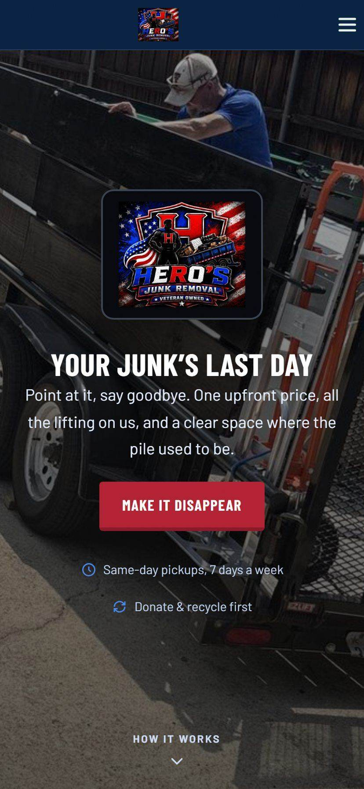
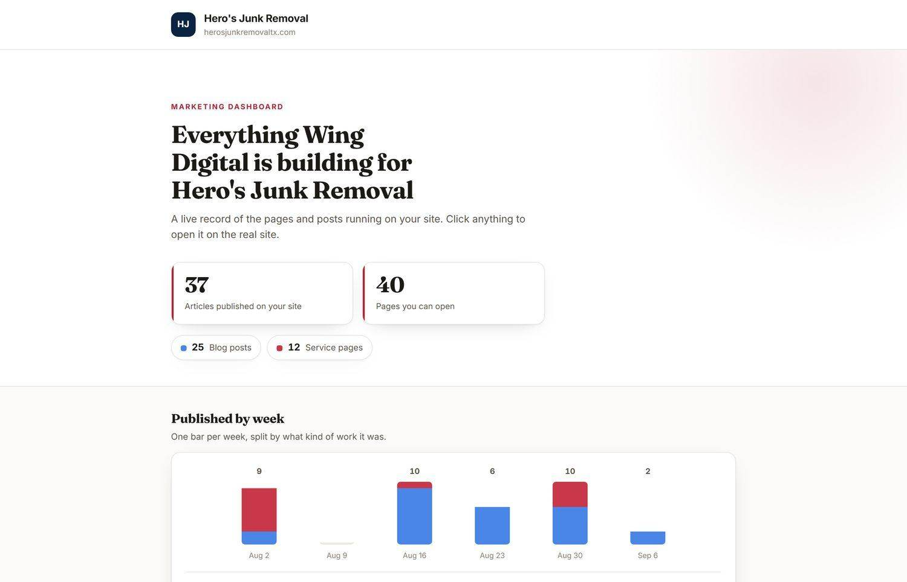

Hero's Junk Removal
A veteran owned junk removal company in Dallas-Fort Worth. We run the search work, the service pages and the content engine behind the site.
Junk removal is a search business.
Almost nobody plans a junk haul. A garage gets cleared out on a Saturday, a tenant leaves a house full of furniture, a renovation ends with a pile in the driveway, and somebody picks up a phone and searches. The job goes to whoever is visible in that moment and looks like they will actually turn up.
So the work here was never about a prettier site. It was about being the company that comes up, for the specific thing being hauled, in the specific town it needs hauling from.
A junk removal customer is not comparing brands. They are comparing whoever is on the screen when the pile is still in the driveway.
What we run
A service page for each kind of job we haul, so a search for the particular problem lands on a page about that problem rather than a general list. On-page SEO underneath all of it: titles, schema and internal links wiring every new post back into the pages that sell the work. And a content engine publishing four to five times a week, which is what a search business needs to keep widening the set of questions it can answer.
The site itself is theirs and it is good. The tone came from them: veteran owned, plain about price, and clear that the lifting is not your problem. Our job was to make sure the people searching at that exact moment find it.


Found at the moment it matters
Nobody plans a junk haul. Somebody standing in front of the pile searches, and the job goes to whoever is on the screen and looks like they will turn up. That is the whole brief.
Junk removal is a search business.
The brief
Almost nobody plans a junk haul.
What we run
A service page for each kind of job we haul, so a search for the particular problem lands on a page about that problem rather than a general list.
The site
Somebody standing in front of the pile searches, and the job goes to whoever is on the screen and looks like they will turn up.
Built and ready is not the same as sent.
An outreach lane is built and sitting ready on their dashboard, 150 businesses across 32 cities, and not one email has been sent from it.

Hero's Junk Removal dashboard. 37 articles published and 40 pages you can open, split 25 blog posts and 12 service pages. The chart below runs by week: 9, 10, 6, 10 and 2 across August into September.
- 37 articles published
- 40 pages you can open
- Split 25 blog posts and 12 service pages
- 9, 10, 6, 10 and 2 across August into September
Built and ready is not the same as sent.
Hero's is a search and content engagement. An outreach lane is built and sitting ready on their dashboard, 150 businesses across 32 cities, and not one email has been sent from it. It goes out on their go-ahead and not before. We say so because a case study that implies otherwise is how agencies end up selling you something you were never given.
Want to be the one who comes up?
Tell us what you do and where the work comes from now. The call is free and takes fifteen minutes.
Request a free consultation